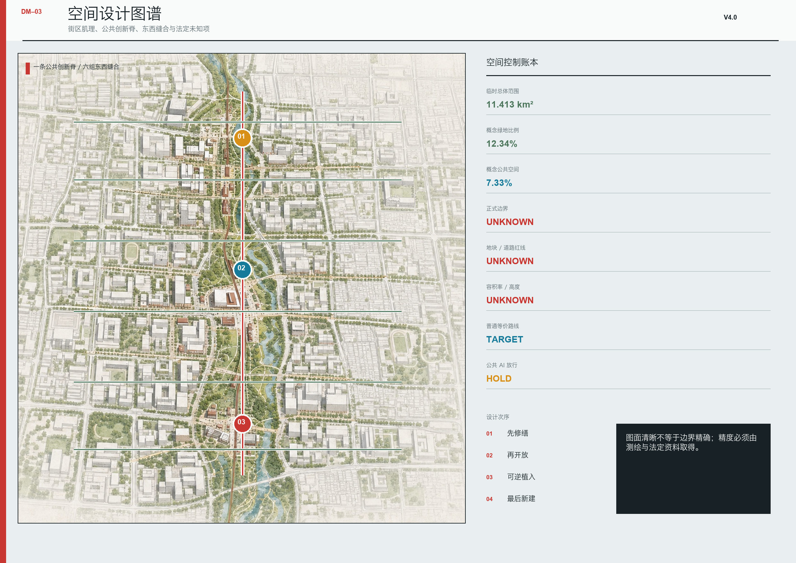

01 / GOVERNANCE AS A DRAWING
每一个公共 AI 构件，先拿到一张边界护照
公共记忆
- 铁路遗存｜长期保存，可纠错
- 口述历史｜权利清楚，可撤回
- 模型来源｜公开版本与责任
- 失败记录｜与成功同样公开
DM—P01 / HOLD
智治园同意剖面
- 空间
- 60 × 14 米｜四条可读边界
- 数据
- 仅 D0—D3；禁止人脸识别和静默追踪
- 普通等价
- 有人值守、无需账号的连续路线
- 停止
- 物理红色按钮 + 本地断电 + 人工接管
- 放行证据
- 每类画像每试点至少 5 人，通过路线与撤回测试
HOLDLIMITED RELEASEREVISERETIRE
个人遗忘
- D0 不采集
- D1 聚合数据 90 天
- D2 服务会话 0—7 天
- D3 测试事件 30 天
- D4 公共贡献可撤回

02 / CONSENT IS SPATIAL
同意不是勾选框，而是一条能绕开的路
4.0 m 无 AI / 2.5 m 匿名辅助 / 5.0 m 受控试验 / 2.5 m 安全缓冲
无障碍净宽任何时点不低于 1.8 m；传感器外露、急停可见、控制台有人值守。
无障碍净宽任何时点不低于 1.8 m；传感器外露、急停可见、控制台有人值守。
01普通路线 100%不用账号、不经过测试区
02理解率 ≥80%能说清所处数据边界
03接管率 100%红灯状态恢复人工服务
04重大问题 = 0否则默认保持暂停
05六类画像老人、轮椅、视障、亲子、夜班、国际访客
06投诉回执 ≤10 min删除、纠错、申诉可追踪
03 / IMPLEMENTATION CONTRACT
180 天只做可停止、可验收的最小试点
WP0 · 0—30
锁定事实
权属、基线、许可地图
WP1 · 31—60
普通服务先行
无障碍路线与人员规程
WP2 · 61—90
有界原型
护照、急停、撤回演练
WP3 · 91—120
限时放行
不超过 20 个值守窗口
WP4 · 121—180
决定并公开
保持 / 放行 / 修改 / 退役
¥750—1350 万概念投资带普通服务与无障碍 ≥30% · G3 前 AI 硬件 ≤25% · 预备金 10%
04 / MACHINE + HUMAN REVIEW
任务覆盖与核心指标票据
11.41 km²临时总览范围
12.34%概念绿地率
7.33%概念公共空间率
总览地图用地分区交通慢行蓝绿公共空间建筑更新项目AI 场景核心指标
任务覆盖 · 自检状态 · 假设
agent.1—agent.6 覆盖总体概念、生态、AI+ 场景、公共空间、文化与长期运营。确定性、空间、视觉、专业证据四项检查必须通过。官方边界、现场基线、权属、市政、文保、消防交通许可与运营责任仍待确认；页面指标仅用于概念复算，不作为官方红线或审批依据。
05 / SEVEN-BOARD SET
完整双语成果


